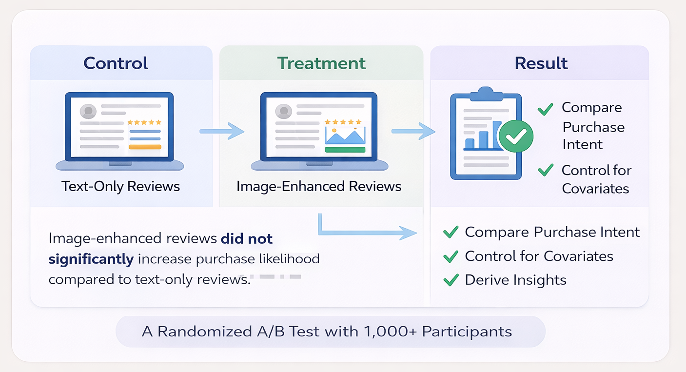
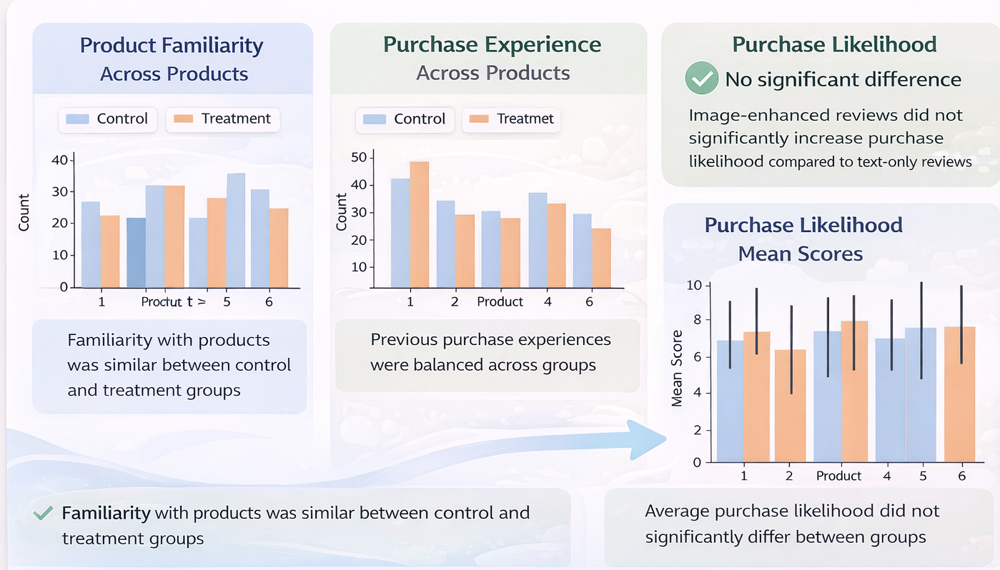

experimentation case study
Evaluating the Impact of Review Formats on Consumer Purchase Intent
— A controlled A/B test assessing whether image-enhanced reviews increase purchase likelihood versus text-only reviews.

Overview / Description
Online reviews influence consumer choices, but it is unclear whether image-enhanced reviews meaningfully increase purchase intent compared with text-only reviews. This project tested that assumption through a controlled experiment to support better e-commerce product and review strategy.
Objective / Success Metrics
Measure whether review format has a statistically significant effect on purchase likelihood and identify what factors matter more in consumer decision-making.
Approach
- Designed an A/B test simulating an Amazon shopping experience across 6 product categories.
- Randomly assigned participants to either a control group (text-only reviews) or treatment group (image-enhanced reviews).
- Tracked covariates such as gender, purchase experience, and product familiarity.
- Conducted randomization checks, balance tests, and a pooled OLS regression model.

Results / Key Findings
- The regression showed that image-enhanced reviews did not significantly affect purchase likelihood (p = 0.478).
- Product familiarity was the strongest statistically significant predictor (coefficient = 0.622, p = 0.002).
- Effect size analysis showed that images mattered slightly more in some categories such as clothing, but had negligible impact in others such as books or tools.
Impact / Conclusion / Recommendations
- Businesses should not assume visual user-generated content is universally effective.
- Instead, they should emphasize product familiarity cues and strengthen high-quality text content, especially for low-familiarity products.